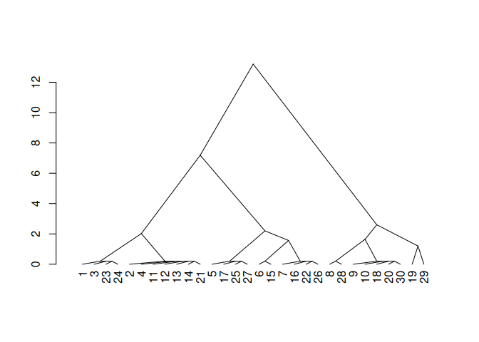
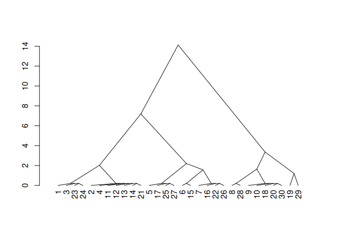

The goal of {SOILmilaR} is to provide methods for applying standardized, customizable “similar soils” rules to site-level data derived from various sources.
The core function to implement this method is similar_soils(), which compares a set of soils against one soil type or combination of soil conditions. similar_soils() can be called iteratively using the design_mapunit() function.
The method generally follows the process outlined in Norfleet & Eppinette (1993):
Norfleet, M.L. and Eppinette, R.T. (1993), A Mathematical Model for Determining Similar and Contrasting Inclusions for Map Unit Descriptons. Soil Survey Horizons, 34: 4-5. https://doi.org/10.2136/sh1993.1.0004
Installation
You can install the development version of SOILmilaR from GitHub with:
# install.packages("remotes")
remotes::install_github("brownag/SOILmilaR")Example
This is an example that shows you how similar_soils() works.
First we generate a synthetic data set using random soil depths across a range of depth classes, as well as random particle size control section clay content and fragments.
Then we apply a subset of taxonomic rules for loamy soils to assign a taxonomic particle size class.
library(SOILmilaR)
set.seed(123)
x <- do.call('rbind', lapply(1:3, \(i) data.frame(id = paste0(LETTERS[1:10], i),
depth = runif(10, 35, 150),
pscs_clay = c(runif(4, 18, 35), runif(6, 14, 18)),
pscs_frags = c(runif(3, 0, 15), runif(4, 10, 34), runif(3, 35, 60) + c(0, 40, 0)))))
x$taxpartsize <- interaction(cut(x$pscs_clay, c(0, 18, 35, 60, 100)),
cut(x$pscs_frags, c(0, 35, 90, 100)), drop = TRUE)
x$taxpartsize <- match(as.character(x$taxpartsize), c("(0,18].(0,35]", "(18,35].(0,35]", "(0,18].(35,90]", "(18,35].(35,90]"))
x$taxpartsize <- c("coarse-loamy", "fine-loamy", "loamy-skeletal", "loamy-skeletal")[x$taxpartsize]
x$taxpartsize[x$depth <= 50] <- "loamy"
x$taxpartsize[x$pscs_frags > 90] <- "fragmental"Then we create some rating functions for properties of interest.
rate_taxpartsize <- function(x) {
dplyr::case_match(x,
c("sandy-skeletal") ~ 1,
c("sandy") ~ 3,
c("loamy", "coarse-loamy", "coarse-silty") ~ 5,
c("fine-loamy", "fine-silty") ~ 7,
c("clayey", "fine") ~ 9,
c("very-fine") ~ 11,
c("loamy-skeletal", "clayey-skeletal") ~ 13,
"fragmental" ~ 15)
}
rate_depthclass <- function(x,
breaks = c(
`very shallow` = 25,
`shallow` = 50,
`moderately deep` = 100,
`deep` = 150,
`very deep` = 1e4
),
...) {
res <- cut(x, c(0, breaks))
factor(res, levels = levels(res), labels = names(breaks), ordered = TRUE)
}
rate_pscs_clay <- function(x, breaks = c(18, 35, 60, 100)) {
res <- cut(x, c(0, breaks))
factor(res, levels = levels(res), ordered = TRUE)
}To run similar_soils(), we pass a data.frame or SoilProfileCollection as the first argument. The second argument is a named list that provides a mapping between site-level properties and rating functions. The list elements are functions with minimum arguments x and ..., and the element names are the corresponding columns.
m <- list(taxpartsize = rate_taxpartsize,
depth = rate_depthclass,
pscs_clay = rate_pscs_clay)
s <- similar_soils(x, m)
#> comparing to dominant reference condition (`7.deep.(18,35]` on 7 rows)Here we inspect the tabular output of a single run.
head(s)
#> id taxpartsize depth pscs_clay similar_dist similar_single
#> 1 A1 7 moderately deep (18,35] 1 1
#> 2 B1 7 deep (18,35] 0 0
#> 3 C1 7 moderately deep (18,35] 1 1
#> 4 D1 7 deep (18,35] 0 0
#> 5 E1 5 deep (0,18] 3 2
#> 6 F1 5 shallow (0,18] 5 2
#> group similar
#> 1 7.moderately deep.(18,35] TRUE
#> 2 7.deep.(18,35] TRUE
#> 3 7.moderately deep.(18,35] TRUE
#> 4 7.deep.(18,35] TRUE
#> 5 5.deep.(0,18] FALSE
#> 6 5.shallow.(0,18] FALSEThe rating values can be used as surrogates for the detailed properties for calculating distance.
Here, we use cluster::agnes() to cluster similar sets of rating values, and render a dendrogram.
# inspect distances using agglomerative clustering+dendrogram
d <- cluster::agnes(s[, 5, drop = FALSE], method = "gaverage")
d$height <- d$height + 0.2 # fudge factor for 0-distance
plot(stats::as.dendrogram(d), center = TRUE, type = "triangle")
If we set absolute=FALSE then the differences between soils can be negative, which can help with processing ratings that are ordinal in nature.
# allow relative contrast ratings to be negative
# (i.e. ordinal factors, concept of "limiting")
# absolute value is still used for "similar" threshold
s2 <- similar_soils(x, m, absolute = FALSE)
#> comparing to dominant reference condition (`7.deep.(18,35]` on 7 rows)
# inspect distances unsing agglomerative clustering+dendrogram
d2 <- cluster::agnes(s2[, 5, drop = FALSE], method = "gaverage")
d2$height <- d2$height + 0.2 # fudge factor for 0-distance
plot(stats::as.dendrogram(d2), center = TRUE, type = "triangle")
design_mapunit() function
A higher-level wrapper function around similar_soils() is design_mapunit(). It takes the same inputs as similar_soils() but it processes the data iteratively until there are no data remaining to be grouped.
Here we use the same input data.frame and rating function.
d <- design_mapunit(x, m)
d[order(d$component), ]
#> id depth pscs_clay pscs_frags taxpartsize component
#> 1 A1 68.07141 34.26617 13.3430897 fine-loamy Alpha
#> 2 B1 125.65509 25.70668 10.3920511 fine-loamy Alpha
#> 3 C1 82.03235 29.51870 9.6076022 fine-loamy Alpha
#> 4 D1 136.54700 27.73477 33.8624746 fine-loamy Alpha
#> 11 A2 145.74779 20.42760 0.6874675 fine-loamy Alpha
#> 12 B2 138.76439 25.04729 6.6330011 fine-loamy Alpha
#> 13 C2 114.43111 25.03331 11.9838727 fine-loamy Alpha
#> 14 D2 126.47875 24.27037 12.9255822 fine-loamy Alpha
#> 21 A3 111.48825 30.82608 3.6542921 fine-loamy Alpha
#> 23 C3 79.15651 30.07310 6.2647017 fine-loamy Alpha
#> 24 D3 66.55412 18.01062 28.9167000 fine-loamy Alpha
#> 8 H1 137.62819 14.16824 49.8535505 loamy-skeletal Beta
#> 9 I1 98.41503 15.31168 82.2289934 loamy-skeletal Beta
#> 10 J1 87.51069 17.81801 38.6778412 loamy-skeletal Beta
#> 18 H2 59.88691 15.86385 53.8326966 loamy-skeletal Beta
#> 20 J2 61.63697 17.43131 44.3615694 loamy-skeletal Beta
#> 28 H3 128.42479 16.45108 57.3262779 loamy-skeletal Beta
#> 30 J3 85.58064 14.44454 39.3763163 loamy-skeletal Beta
#> 6 F1 40.23900 17.59930 27.0047312 loamy Delta
#> 15 E2 37.83057 14.60978 23.4627516 loamy Delta
#> 22 B3 45.90668 28.69676 10.0208338 loamy Delta
#> 19 I2 71.59082 15.06389 97.3761340 fragmental Epsilon
#> 29 I3 126.34937 15.40719 97.1617265 fragmental Epsilon
#> 5 E1 143.15374 14.41170 25.7369392 coarse-loamy Gamma
#> 7 G1 95.73213 14.98435 23.0575846 coarse-loamy Gamma
#> 16 F2 89.94654 14.55522 14.9567534 coarse-loamy Gamma
#> 17 G2 122.22285 14.93214 13.0607596 coarse-loamy Gamma
#> 25 E3 128.68360 15.90127 12.4687515 coarse-loamy Gamma
#> 26 F3 86.57938 14.88048 20.4374258 coarse-loamy Gamma
#> 27 G3 128.15740 15.51927 33.6389675 coarse-loamy Gamma
sort(prop.table(table(d$component)), decreasing = TRUE)
#>
#> Alpha Beta Gamma Delta Epsilon
#> 0.36666667 0.23333333 0.23333333 0.10000000 0.06666667If we assume that the collection observations in x are spatially representative of the mapunit extent, it is reasonable to consider the resulting proportions to be similar to the abundance represented with component percentages.
A literal interpretation of this output would result in a map unit with 5 groups of similar soils, of which 4 could be major components. Alpha appears to be dominant, Beta and Gamma are co-dominant in second place, Delta and Epsilon are dissimilar, limiting, and very strongly contrasting, with Epsilon as a minor component.
apply(d[2:4], 2, \(dd) {
aggregate(dd, by = list(component = d$component), quantile)
})
#> $depth
#> component x.0% x.25% x.50% x.75% x.100%
#> 1 Alpha 66.55412 80.59443 114.43111 131.51288 145.74779
#> 2 Beta 59.88691 73.60880 87.51069 113.41991 137.62819
#> 3 Delta 37.83057 39.03479 40.23900 43.07284 45.90668
#> 4 Epsilon 71.59082 85.28045 98.97009 112.65973 126.34937
#> 5 Gamma 86.57938 92.83933 122.22285 128.42050 143.15374
#>
#> $pscs_clay
#> component x.0% x.25% x.50% x.75% x.100%
#> 1 Alpha 18.01062 24.65184 25.70668 29.79590 34.26617
#> 2 Beta 14.16824 14.87811 15.86385 16.94120 17.81801
#> 3 Delta 14.60978 16.10454 17.59930 23.14803 28.69676
#> 4 Epsilon 15.06389 15.14972 15.23554 15.32137 15.40719
#> 5 Gamma 14.41170 14.71785 14.93214 15.25181 15.90127
#>
#> $pscs_frags
#> component x.0% x.25% x.50% x.75% x.100%
#> 1 Alpha 0.6874675 6.4488514 10.3920511 13.1343360 33.8624746
#> 2 Beta 38.6778412 41.8689428 49.8535505 55.5794872 82.2289934
#> 3 Delta 10.0208338 16.7417927 23.4627516 25.2337414 27.0047312
#> 4 Epsilon 97.1617265 97.2153284 97.2689302 97.3225321 97.3761340
#> 5 Gamma 12.4687515 14.0087565 20.4374258 24.3972619 33.6389675If we summarize the properties of the resulting groups, we have:
- Alpha: moderately deep to deep, loamy-skeletal
- Beta: deep to moderately deep, fine-loamy
- Gamma: deep to moderately deep, coarse-loamy
- Delta: shallow, loamy
- Epsilon: moderately deep to deep, fragmental
Depending on the context of where these soils occur within the mapunit, one may opt to further combine (or perhaps split out) unique conditions as the pertain to unique soil properties, landforms, and vegetation.